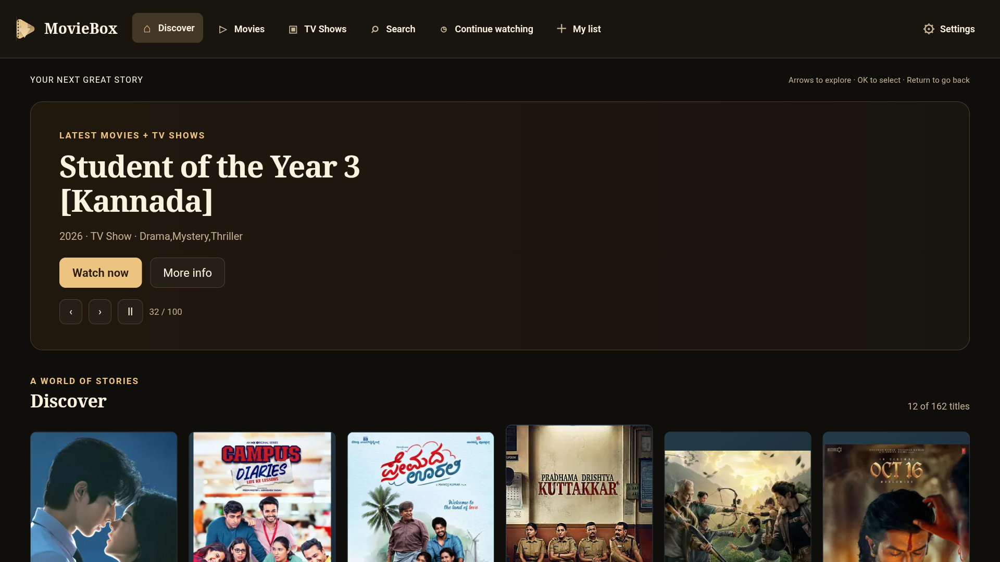

PUBLISHED PROJECTS · DOCUMENTED LIMITS
MovieBox for Android TV & Google TV
A shared TV interface with native Android playback, remote controls and a signed APK.
Download MovieBox for Android TV
The installed name is MovieBox. This is the independent Android TV / Google TV client, separate from the Android phone patch and Samsung Tizen widget.

Install on Android TV or Google TV
- Download the APK from this project's release.
- Transfer it to the TV and allow installation from your chosen file manager.
- Open the APK and install. MovieBox appears in the TV launcher.
A PC can use adb -s YOUR_TV_SERIAL install -r MovieBox-Android-TV-0.1.0.apk after you enable and approve your TV's developer connection. Root access is not required.
Minimum target: Android 6.0/API 23 with current Android System WebView. Older OS/WebView combinations and physical TV models are not universally certified. The APK has no architecture-specific application native libraries. Device codecs and network/source availability still matter.
Features and remote controls
Shared TV interface, five themes, carousel, Movies/TV browsing, native Media3 playback, available subtitles and audio tracks, My list, resume and sparse episode autoplay.
Arrows move focus, OK selects and Back returns. In playback, OK pauses/resumes on the play control or unobstructed player; Left/Right seek from the hidden controls or seek bar. Up opens the episode drawer only when controls are hidden. Android provides the TV search keyboard.
Updates and saved data
Optional notices check published GitHub releases. They do not force installation or promise instant delivery while closed. Install newer public APKs with the same package and certificate to preserve the private library. A previous local debug prototype has a different signature; uninstalling it removes its data. Clearing data or uninstalling the public app also removes the library.
Validation and known limits
The exact signed, non-debuggable release passed generated 1080p native playback, remote pause/resume, repeated seeking, subtitles/audio, episode continuation, failure exit, navigation during playback and a separate cold-process library/theme/progress restore.
Full physical-device coverage, minimum-version coverage and complete live-service episodes are not certified. Background downloads, local file-picker integration and account flows are not complete desktop parity. Source qualities, captions and languages vary; no membership or DRM bypass is included.
Read exact validation evidence · Full installation and update guide · Report an Android TV issue